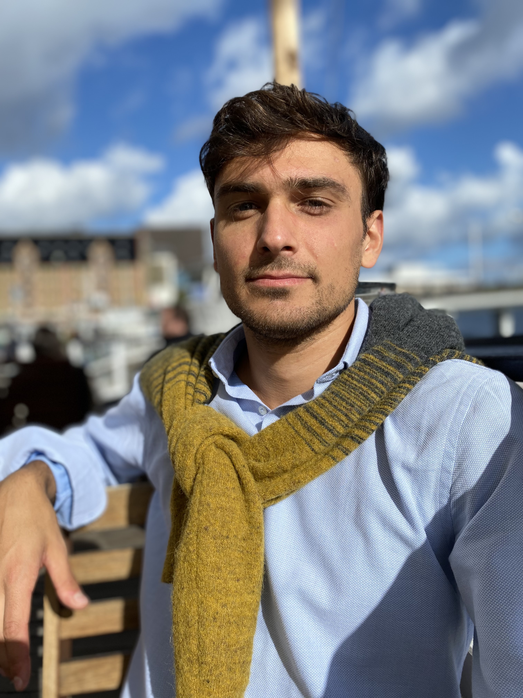
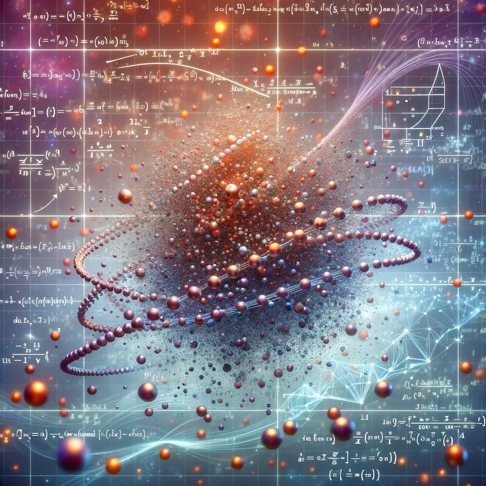
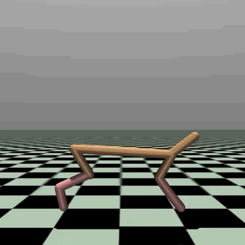
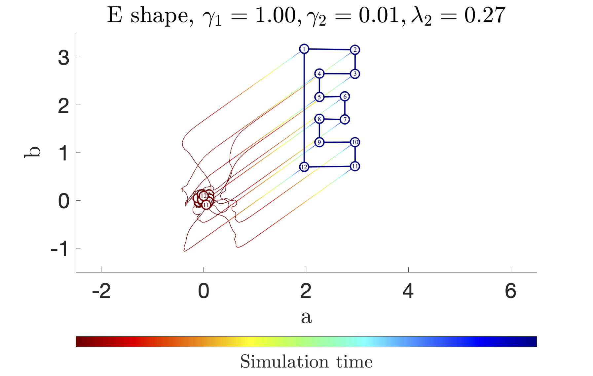
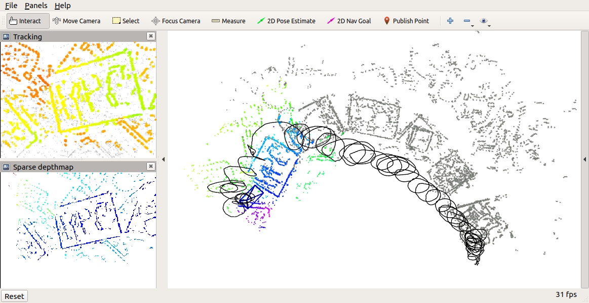
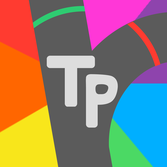

I am a PhD student with Raff D'Andrea and Simone Schürle at ETH Zürich.
 Virtual Reality misc. In 2018 I worked on some VR projects during the Uqido academy of immersive technologies. We built a VR physiotherapist and an Alice in wonderland scene... But what got me excited the most was CUDA... pretty cool stuff. :)
Virtual Reality misc. In 2018 I worked on some VR projects during the Uqido academy of immersive technologies. We built a VR physiotherapist and an Alice in wonderland scene... But what got me excited the most was CUDA... pretty cool stuff. :)

works
Cooking... 🧪

Dynamic Programming in Probability Spaces via Optimal Transport
SIAM SICON 2023
A. Terpin*, N. Lanzetti*, and F. Dörfler.

Trust Region Policy Optimization with Optimal Transport
NeurIPS 2022
A. Terpin*, N. Lanzetti*, B. Yardim, F. Dörfler, and G. Ramponi.

Feedback Optimisation for Robotic Coordination
ACC 2022
A. Terpin, S. Fricker, M. Perez, M. Hudoba de Badyn, and F. Dörfler.
pet projects
... I will slowly add all the others ... stay tuned!
CardsGPT A chrome extension to turn your conversations with ChatGPT into flashcards (super useful to remember biology stuff!).
Explain it Like I am 5 A let me google that for you powered by LLM, a fun project with Luigi Donadel built in 2024.

Computer Vision misc. In 2021 I worked at the Robotics and Perception Group with Daniel Gehrig and Davide Scaramuzza on the open sourcing of an event-based visual odometry pipeline. Prior to that, I built a visual odometry pipeline from scratch in Matlab with Antonio Arbues (2020), and a steel defect detector using wavelets and bayesian optimization with Claudio Verardo (2019, mostly to play with wavelets).

Trivia Patente In high school (2016-2018), with Luigi Donadel and Gabriel Ciulei, we built an app to prepare for the Italian driving license theory exam by playing with your friends. We were bored of studying the theory exam, and we thought this would have made it easier... iOS app in Swift, Android app in Java, backend in Python, and many cool javascript daemons for when we had no users, lol. (we got to 100, eventually... lesson: iterate with your customers!)
Java misc. In high school (2015-2016) I built many random (looking back, cute) projects to learn Java: a computer graphic simulation of the iconic race between the turtle and the hare (open to bets!), a 2-players maze game (meant to play with my niece), an enigma machine (after I saw the imitation game), a chat server with some extra features, a barebone search engine, ... of most of the other projects I lost the code, sadly. I talked about these projects in this twitter thread.
teaching
I am continuously looking for motivated students interested in working with me. Feel free to reach out with your transcripts and a brief description of a project you have worked on.
Ongoing projects:
- Martin Gadea, Learning Diffusion at Lightspeed
Teaching positions:
- Head TA for the ETH Zürich class Programming and Optimal Control (2023) by Raff. I was responsible for the material, exercises, and exam. Some tweets on the content: Value Iteration vs Policy Iteration, and Linear Programming, the Viterbi algorithm, Label Correcting Algorithms to solve Shortest Path Problems. The exam was taken by 200+ students. I worked with an amazing team of students:
- Alain Schöbi
- Philip Pawlowsky
- Cara Koepele
- Abhiram Shenoi
- Teaching Assistant for the ETH Zürich class Applied Compositional Thinking for Engineers I (2023) and II (2022) by Andrea Censi.
- Teaching Assistant for the ETH Zürich class Linear System Theory (2021).
- Teaching Assistant for the ETH Zürich class Control Systems (2021) by Florian.
- Teaching Assistant for the Linear Algebra class (2020) in Udine.
bookmarks
- A Stroke of Genius: Striving for Greatness in All You Do
- Paul Graham essays
- The argmin blog (inactive) and the argmin substack
- Andrej Karpathy writings
My reading picks from 2023.
Optimization by Vector Space methods (Luenberger), Variational Analysis (Rockafellar), Gradient Flows (Ambrosio, Gigli and Savaré), The British Industrial Revolution in Global Perspective (Allen), Entangled Life (Sheldrake), How To Be a Founder (Bentinck), The defining decade (Jay), Radical Candor (Scott).
Check also my Tweet on this.
awards and prizes
- Willi Studer Prize (2023) as top graduate in the Robotics, Systems and Control MSc (GPA: 6.0/6.0).
- ETH Medal (2023) for my master thesis on Optimization in Wasserstein Spaces.
- NeurIPS Scholar Award (2022).
- Student Travel Grant for the American Control Conference (2022).
- Among the four winners of the national-level selection contest for the Superiore dell'Università di Udine, awarded a five years full scholarship (2018).
- Best student award at ITST JF Kennedy, Pordenone (2014, 2015, 2017).
- Sport and School award at ITST JF Kennedy, Pordenone (2015).
- Enlisted in the excelence records of the Italian Ministry of Education (2017).